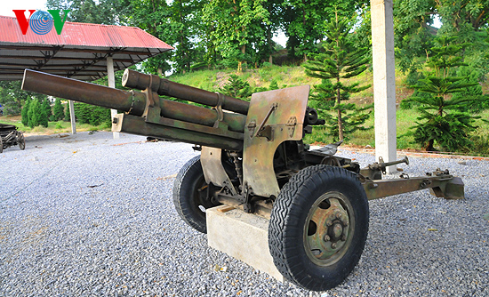
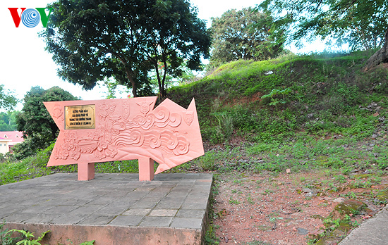

Đồi A1
Đồi A1
A1 là ký hiệu mà quân đội Việt Nam đặt cho quả đồi. Sau nhiều trận chiến vô cùng ác liệt đã diễn ra ở đây thì đến 4h sáng ngày 7/5/1954 quân đội Việt Nam đã chiếm được đồi A1.
ĐỒI A1 NHỮNG CHIẾN CÔNG CÒN VANG MÃI
Đặt chân lên đồi A1 (Điện Biên), được chứng kiến những chứng tích lịch sử còn sót lại của một trận chiến ta thấu hiểu sự hào hùng của các chiến sỹ thời đó.
Đặt chân tới Điện Biên những ngày đầu tháng 5, một không khí của sự chiến thắng, hào hùng như đang bao trùm lên toàn thành phố của vùng núi rừng Tây Bắc xa xôi này.
Nhắc đến Điện Biên, chúng ta không thể không nhắc tới những địa danh gắn với những trận chiến lịch sử được nhiều người biết đến như Mường Thanh, khu trung tâm đề kháng Him Lam, Hồng Cúm, căn cứ địa Mường Phăng… Và đặc biệt là đồi A1 nơi đã diễn ra trận chiến lịch sử kéo dài 39 ngày đêm.
Di tích A1 (cứ điểm Elian 2) nằm cạnh quốc lộ 279 (đường 7/5) thuộc phường Mường Thanh - thành phố Điện Biên Phủ, tỉnh Điện Biên. Cứ điểm này cao 32 m so với mặt đường có diện tích 83.000 m2, cách Sở chỉ huy tập đoàn cứ điểm Điện Biên Phủ của thực dân Pháp khoảng 500 m về phía Tây theo đường chim bay.
A1 thuộc dãy đồi phía Đông cùng với C1, C2, D và E tạo thành bức tường thành vững chắc che chở cho phân khu trung tâm, là điểm cao cuối cùng trực tiếp che chở cho Sở chỉ huy quân Pháp và được ví như “chìa khóa” của cả tập đoàn cứ điểm Điện Biên Phủ.
Hơn 2000 cán bộ, chiến sĩ của ta đã anh dũng hi sinh. Cuối cùng quân ta đã làm chủ hoàn toàn cứ điểm A1 vào 4h sáng ngày 7/5/1954, mở toang cánh cửa thép tiến thẳng vào trung tâm của tập đoàn cứ điểm Điện Biên Phủ.
Trận thắng A1 có một ý nghĩa rất quan trọng, đã mở ra cho toàn mặt trận nhanh chóng chuyển sang tổng công kích và đã giành toàn thắng chỉ sau đó 13 giờ đồng hồ.
Ngày nay đến với cứ điểm A1, qua những chứng tích lịch sử còn lại của chiến tranh như: đường hầm, chiếc xe tăng, hố bộc phá… chúng ta cũng phần nào thấu hiểu được sự vất vả, gian khổ cũng như tinh thần anh dũng, quả cảm của các chiến sỹ để có được sự độc lập, tự do ngày hôm nay./.
Lô cốt cây đa cụt “Ụ thằng người”. Lô cốt này bị đại đội 671 - tiểu đoàn 251 - trung đoàn 174 - đại đoàn 316 tiêu diệt lúc 1h30' ngày 7/5/1954



TIN MỚI NHẤT
- Danh tiếng của du lịch Việt Nam ngày càng được biết đến
- UNESCO: Nhiều thách thức đang đè nặng lên di sản ở Việt Nam
- Sôi nổi “Hành trình về nguồn” tại Điện Biên
- Xây dựng phòng tuyến ứng phó dịch bệnh Covid-19 trên biên giới
- Phát huy hiệu quả tuyên truyền phòng, chống dịch Covid-19
- Nỗ lực hoàn thành xây dựng nhà ở cho hộ nghèo Mường Nhé (24/04/2020)
- Có hay không việc cấp sổ đỏ “chồng” lên hành lang hạ lưu cống thoát nước của Tỉnh lộ 140? (22/05/2020)
- Bài học về việc tuyên truyền hỗ trợ (02/06/2020)